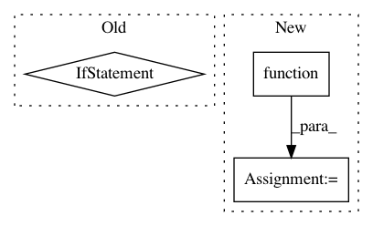

659534c4f142c4e87acb4a4320f8387e6f755c93,foolbox/models/keras.py,KerasModel,__init__,#KerasModel#Any#Any#Any#Any#Any#,28
Before Change
self._predictions_are_logits = predictions_are_logits
if preprocess_fn is not None:
self.preprocessing_fn = lambda x: preprocess_fn(x.copy())
else:
self.preprocessing_fn = lambda x: x
def _as_logits(self, predictions):
assert predictions.ndim in [1, 2]
if self._predictions_are_logits:
return predictions
After Change
grads = K.gradients(loss, images_input)
grad = grads[0]
self._loss_fn = K.function(
[images_input, label_input],
[loss])
self._batch_pred_fn = K.function(
[images_input], [predictions])
self._pred_grad_fn = K.function(
[images_input, label_input],
In pattern: SUPERPATTERN
Frequency: 3
Non-data size: 3
Instances
Project Name: bethgelab/foolbox
Commit Name: 659534c4f142c4e87acb4a4320f8387e6f755c93
Time: 2017-07-21
Author: wielandbrendel@users.noreply.github.com
File Name: foolbox/models/keras.py
Class Name: KerasModel
Method Name: __init__
Project Name: reinforceio/tensorforce
Commit Name: 8a38392dadffb37e2d122e7f7ce8b638e063bf80
Time: 2017-07-07
Author: aok25@cl.cam.ac.uk
File Name: tensorforce/models/policy_gradient_model.py
Class Name: PolicyGradientModel
Method Name: __init__
Project Name: OpenNMT/OpenNMT-tf
Commit Name: fe92b5e268c4792bb2e3d272c4312b4816d7ec37
Time: 2020-12-10
Author: guillaumekln@users.noreply.github.com
File Name: opennmt/training.py
Class Name: Trainer
Method Name: _steps